Chega de perder horas travado no piano roll encarando a tela da DAW. O MadBass é o gerador VST3 inteligente com DNA 100% puro de Tech House: notas no off-beat, tônica forte, slides e ghost notes sem embolar com o bumbo. Puxe a alavanca, trave as notas com o STABILIZE e arraste o MIDI direto para o seu synth favorito.
Esta é uma réplica funcional do plugin rodando no seu navegador com síntese de áudio real! Clique na alavanca para gerar novos grooves, ouça com o botão PREVIEW, clique nas notas da CRT para TRAVAR (STABILIZE) e baixe o arquivo MIDI real no botão verde.
Dentro da sua DAW, o MadBass roda a 64-bits com latência zero e processamento JUCE nativo.
De linhas minimalistas hipnóticas aos baixos mais pesados de festival. Clique em qualquer estilo para carregar os parâmetros direto no simulador e ouvir na hora!
Inspirado no som de Michael Bibi e PAWSA. Linha espaçada com tônica forte no off-beat e ghost notes sutis.
O clássico groove rolante com pressão para o drop principal. Sem colidir com o kick e com pegada firme.
Escala Phrygian Dominant trazendo clima exótico, latino e envolvente. Perfeito para vocais em espanhol.
Tensão sombria da segunda menor com slides acentuados. Ideal para sets mais tarde e pistas escuras.
No Tech House, o baixo é responsável por 80% do groove. Se a bassline não estiver encaixada com pressão, a track inteira soa amadora e sem energia.
Você passa horas clicando com o mouse, nota por nota, tentando achar um ritmo que funcione. O resultado? Um baixo genérico, "quadrado" e sem o swing clássico dos clubes.
Você baixa packs de MIDI da internet, mas as notas brigam com o tom do seu vocal, embolam com as frequências do bumbo ou já foram usadas por milhares de outros produtores.
Criar variações a cada 4 ou 8 compassos sem estragar o riff principal é um pesadelo. Você copia e cola o mesmo loop a música inteira, deixando a faixa repetitiva e monótona.
Veja como as ferramentas do MadBass resolvem cada etapa da produção da sua linha de baixo.
A alavanca não é apenas um botão: é o centro de controle do seu groove. Basta escolher um dos 3 LEDs de modo ao lado da alavanca e puxar:
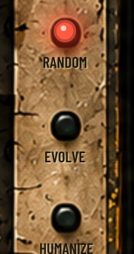
Cria um pattern 100% novo (novo specimen). É o seu ponto de partida para encontrar aquele riff arrebatador.
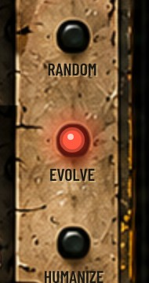
Muda um pouco o pattern atual: remove algumas notas, altera outras e pode acrescentar detalhes mantendo o desenho original. O segredo para criar variações sem perder a identidade.
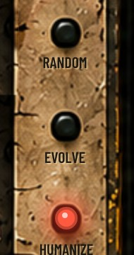
Mantém as mesmas notas e posições e aplica variações sutis de micro-timing, velocity e duração para tirar a rigidez matemática do grid e soar como um músico real.
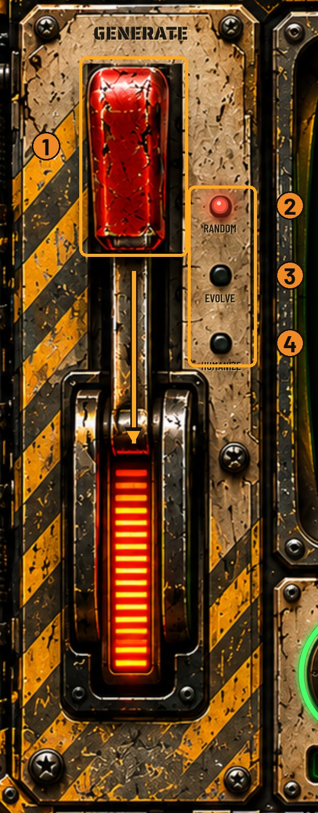
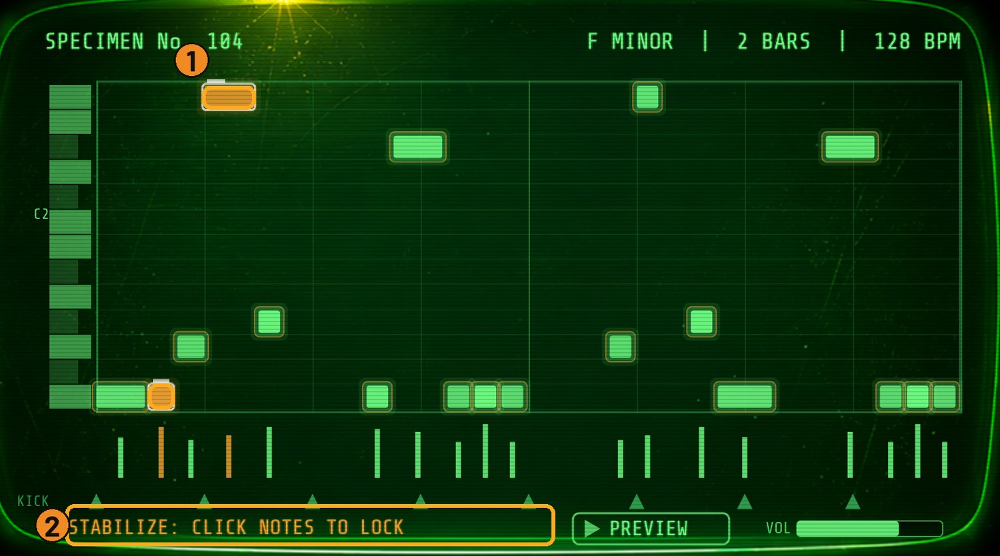
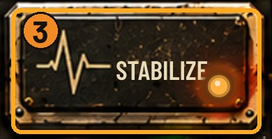
Quantas vezes você gerou uma ideia e amou apenas o comecinho do riff, mas o resto não encaixava? Com o STABILIZE, esse problema acabou:
O MadBass foi feito para quem vive no mundo real da produção musical. O display CRT verde fósforo não é só estética: é uma ferramenta de precisão cirúrgica:
Triângulos na base marcam os passos 0, 4, 8 e 12. Você enxerga com clareza matemática onde o baixo desvia do kick para evitar colisões no espectro de sub.
Mais brilho indica maior velocity; o comprimento do retângulo mostra a sustentação. Barras verticais na base mostram a dinâmica exata de cada nota.
O plugin lê o andamento da sua DAW em tempo real (124 a 130+ BPM) e grava essa informação no arquivo MIDI exportado.
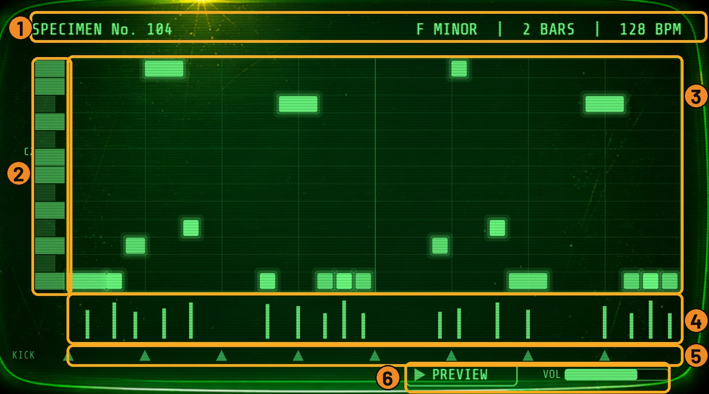
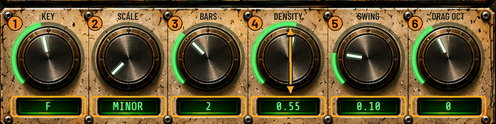
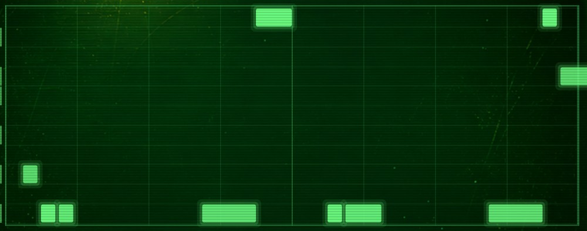
DENSITY 0.25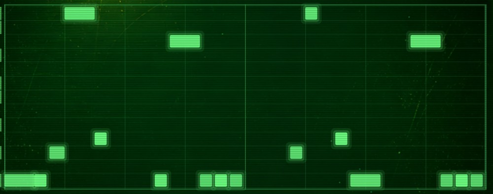
DENSITY 0.55 (PADRÃO)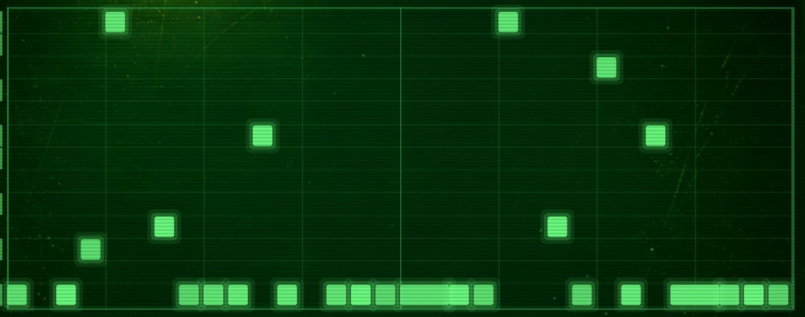
DENSITY 0.90Sem menus escondidos ou centenas de parâmetros inúteis. Apenas o que importa para moldar a sua bassline:
Define a tônica. Transpõe todo o pattern (inclusive as notas travadas).
Minor, Dorian, Phrygian, Pentatonic, Harmonic Minor e Phrygian Dominant.
Tamanho do pattern em compassos (de 16 a 64 steps de semicolcheias).
De linhas espaçadas e minimalistas a grooves cheios e pulsantes.
Atrasa a 2ª e a 4ª semicolcheia para dar o balanço típico de tech house.
Desloca a oitava do MIDI arrastado para afinar com o mapa do seu sintetizador.
Nada de abrir pastas no Windows Explorer ou exportar arquivos manuais. O fluxo do MadBass é imediato:
Clique e segure na área verde DRAG MIDI e solte na pista MIDI da sua DAW com seu synth favorito carregado (Serum, Vital, Diva, etc.).
O MadBass grava os últimos 12 specimens gerados e permite favoritar com estrela (*). Quer voltar a um pattern de 10 minutos atrás? Basta um clique no log.
Ao salvar o projeto na sua DAW, todo o histórico, travas do STABILIZE e favoritos são preservados. Abra daqui a 6 meses e continue exatamente de onde parou.
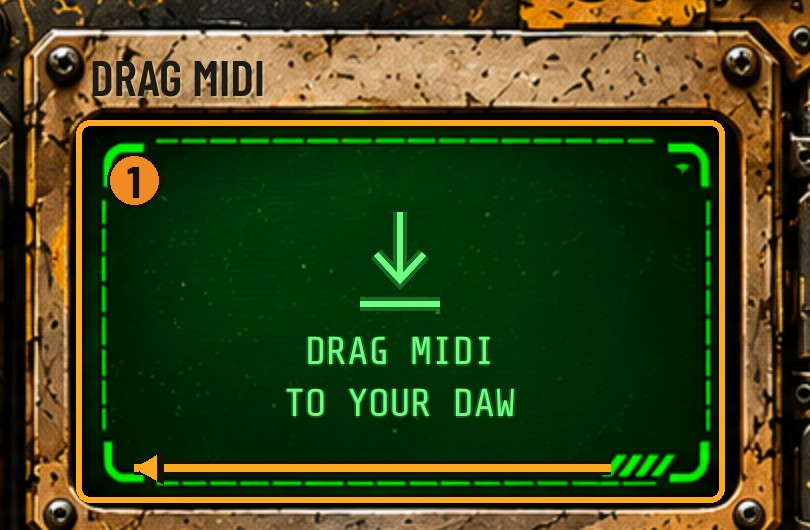
Área DRAG MIDI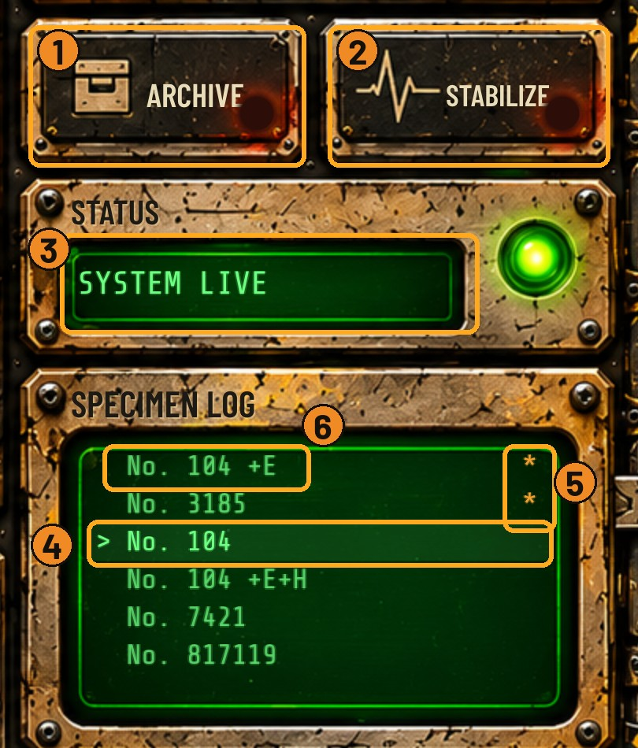
Specimen Log & ArchiveO workflow que os produtores mais rápidos do mundo utilizam para lançar faixas com consistência.
Abra o MadBass na sua pista, escolha o tom da sua track (ex: F Minor) e puxe a alavanca no modo RANDOM. Ouça em loop com o PREVIEW integrado.
Gostou das duas notas principais no off-beat? Ligue o STABILIZE e clique nelas. Mude para EVOLVE para criar variações para o break e o drop.
Arraste a área DRAG MIDI direto para a pista do Serum, Vital, Diva ou Minimoog. O MIDI já cai quantizado, com swing e velocity ajustados.
Veja por que o MadBass supera com folga desenhar notas à mão ou comprar pacotes estáticos.
| Recurso / Critério | MADBASS VST3 | Packs de MIDI Estáticos | Desenhar na Mão |
|---|---|---|---|
| DNA Exclusivo Tech House | 100% Especializado (Off-beat, slides) | Genérico / Outros gêneros | Depende da sua inspiração |
| Variabilidade Infinita | Infinitos specimens determinísticos | Limitado a 50 ou 100 arquivos | Limitado ao seu tempo |
| Travar Notas Favoritas (STABILIZE) | SIM (Trava notas e recria o resto) | NÃO | Trabalhoso e lento |
| Modo EVOLVE (+E) para Variações | SIM (Varia mantendo a identidade) | NÃO (Arquivos desconexos) | Exige tentativa e erro |
| Humanização Orgânica (HUMANIZE) | SIM (Micro-timing e velocity) | Geralmente quantizado rígido | Demora horas ajustando |
| Fluxo Drag & Drop Direto | SIM (Arrasta de dentro da DAW) | Precisa garimpar no explorer | Manual |
Requisitos: Windows 10 ou 11 (64 bits) · Formato VST3 padrão do sistema · Versão Standalone (independente) inclusa!
Veja o que produtores que já assinaram com gravadoras de renome estão achando do workflow com o MadBass.
"Eu perdia pelo menos 2 a 3 horas toda vez que começava um projeto só tentando fazer o baixo casar com o kick. Com o MadBass, em 3 minutos puxo a alavanca, travo a tônica no off-beat com o STABILIZE e o drop já tá pronto. Uma das melhores ferramentas que já comprei."
"A função EVOLVE mudou a forma como monto arranjos. Crio o riff principal pro primeiro drop, dou EVOLVE a cada 8 compassos e crio a variação do segundo drop sem quebrar a vibe da música. O Drag MIDI pro Serum é instantâneo."
"O display CRT com as marcas de kick 4-on-the-floor é genial. Você bate o olho e vê exatamente onde as notas estão deixando espaço pro sub respirar. O som de tech house fica limpo e com muito peso no sound system."
Tudo o que você precisa para nunca mais ter uma track sem groove na sua vida.
Geração ilimitada, alavanca com 3 modos (Random, Evolve, Humanize), STABILIZE e Drag MIDI.
Abra no Windows mesmo sem a sua DAW para testar ideias com o preview integrado em segundos.
Timbres rolantes e prontos com sub afinado para arrastar seu MIDI e tocar com peso de festival. (Valor: R$ 67)
Como montar a base inteira de uma faixa de Tech House em 20 minutos usando o MadBass. (Valor: R$ 97)
Você recebe melhorias e novas atualizações sem pagar nada a mais por isso.
Instale o MadBass na sua DAW, puxe a alavanca e produza suas faixas. Se por qualquer motivo você achar que ele não acelerou seu fluxo de trabalho ou não entregou o groove que você esperava, basta enviar um único email para o nosso suporte e nós devolveremos 100% do seu dinheiro. Sem perguntas e sem letras miúdas.
Clique em qualquer pergunta ou na setinha para ver a resposta detalhada.
Ele é um gerador inteligente de patterns MIDI especializado exclusivamente em Tech House. Ele possui um motor de preview embutido (com som de baixo analógico real) apenas para você ouvir e escolher os patterns sem precisar carregar outro plugin, mas o objetivo principal é você arrastar o MIDI para tocar no seu synth favorito (Serum, Vital, Diva, Sylenth1, etc.).
Sim! Ele é testado e 100% compatível com Ableton Live, FL Studio, Reaper, Bitwig Studio, Cubase, Studio One e qualquer DAW no Windows que suporte o formato VST3 de 64 bits.
A instalação leva menos de 1 minuto. Você receberá o instalador executável oficial MadBass-Setup.exe. Basta avançar os passos e ele instalará automaticamente a pasta VST3 no diretório padrão do Windows (C:\Program Files\Common Files\VST3\MadBass.vst3). Ao abrir a sua DAW, basta fazer um rescan de plugins.
É a nossa tecnologia de travamento de notas. Se você gostou de 2 ou 3 notas do pattern (por exemplo, a tônica marcando o off-beat com pegada), você clica nelas e elas ficam em cor âmbar. Ao puxar a alavanca novamente nos modos RANDOM ou EVOLVE, essas notas travadas permanecem intocadas enquanto todo o restante do pattern é recriado em volta delas.
A versão atual 0.1.0 foi desenvolvida nativamente em C++/JUCE para Windows 10 e Windows 11 (64 bits). A versão macOS está em desenvolvimento no nosso roadmap e quem adquirir hoje terá condições especiais de upgrade quando for lançada.
O envio é 100% automático e imediato. Assim que o pagamento for aprovado (Pix ou cartão), você receberá um email com os links diretos para download do instalador, da chave de ativação e dos dois pacotes de bônus exclusivos (15 Presets para Vital & Serum + Masterclass em Vídeo HD).
Você acabou de baixar suas 3 basslines MIDI gratuitas geradas no nosso simulador. Para desbloquear gerações e exportações MIDI infinitas direto na sua DAW, com latência zero e todas as funções avançadas de Tech House, garanta agora a versão completa do MadBass VST3 + 2 Bônus Exclusivos com valor promocional!